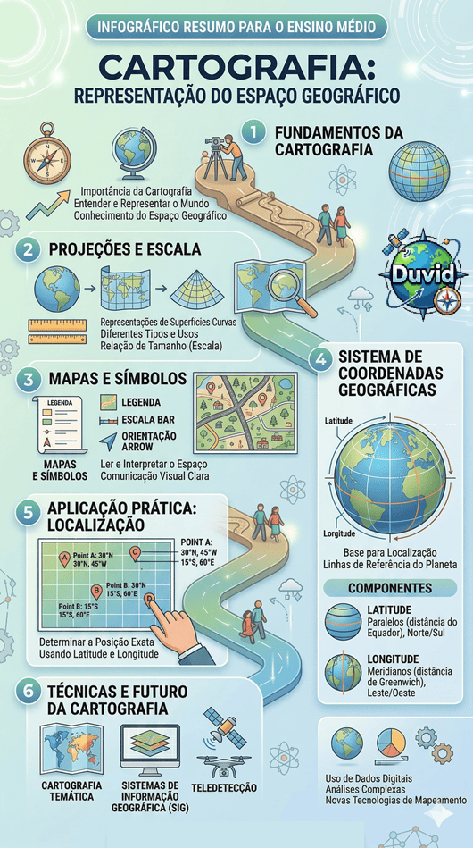

Conteúdo:
Objetivo: Entender a importância da Cartografia para a construção do conhecimento do ser humano. Aplicar o sistema de coordenadas geográficas à localização de pontos na superfície terrestre.
Introdução
Na aula passada, vimos que o espaço geográfico e seus conceitos auxiliares, constituem o objeto de estudo da Geografia, uma ciência envolvida com os aspectos sociais e espaciais da sociedade.
Nesta aula, veremos como a Geografia, em colaboração com a Cartografia, dispõem de técnicas para representar o espaço geográfico.
Ao final, você saberá qual a importância da Cartografia para o conhecimento do ser humano e, também, aprenderá a localizar-se no espaço pelos pontos cardeais e pelas coordenadas geográficas.
 Duvid -
Entrevista
Duvid -
Entrevista
Essa semana o convidado é a Cartografia.
Duvid:. Bem-vinda Cartografia. Sabemos que a senhora está bem ocupada cuidando da localização da Terra. Então, estamos felizes que tenha tido tempo para falar conosco.
Cartografia: Sem problemas. E, eu estou bastante ocupada, ainda mais nos dias de hoje com satélites e GPS, antigamente era mais fácil se preocupar com o mapeamento do mundo.
Duvid: Podemos imaginar. Antes o ser humano nem sabia escrever e já fazia pinturas nas cavernas ou marcava locais de caça para conseguir voltar com segurança.
Cartografia: Foi minha primeira experiência, eu me lembro. Ah, como eu era primitiva, os homens faziam as pinturas no teto das cavernas de animais ou situações do cotidiano. Eu ainda era bem nova, isso há uns 40 mil anos atrás na época do neolítico. Como o tempo passa, não é verdade?
Duvid: Sim, passa rápido. Aproveitando esse tema, nós pesquisamos sua rede social e descobrimos essa sua obra aqui que a senhora postou há cerca de 2500 a 3000 anos A.C:

Cartografia: Vocês pesquisam mesmo sobre nossa origem! Esse trabalho é uma verdadeira relíquia. Eu até esqueci a data correta lá na Mesopotâmia. Hoje já mudou o nome, para o atual Iraque e Kuwait, mas antigamente era na cidade da Babilônia que fazíamos esse tipo de mapa. Era comum escrever na argila, queríamos registrar o encontro do rio Tigre com o Eufrates, tempo bom aquele.
Duvid: E, do mesmo modo, os gregos tiveram um papel muito importante para conhecer o espaço geográfico, não foi?
Cartografia: Sem dúvida. Eu ajudei Eratóstenes, uns 200 anos antes de Cristo, a fazer um mapa da área até então conhecida pelos homens, eles não sabiam o que ainda estava por vir.
Duvid: Nós também recuperamos essa obra-prima. Olha, uma reconstituição (de autor não identificado) do mapa de Eratóstenes, de cerca de 220 A.C. O matemático, geógrafo, poeta grego e bibliotecário de Alexandria usou os levantamentos do mundo conhecidos, após as conquistas de Alexandre, o Grande.

Cartografia: Maravilhoso. Esse mapa mostra a Europa, parte da Ásia e parte do Norte da África. E ele ainda fez o cálculo da circunferência da Terra, quase de maneira exata com os dados de hoje.
Duvid: Esses gregos eram realmente incríveis. A china e o mundo árabe produziram muitos mapas. Mas na Idade Média, um chamou à atenção, o mapa em T. Por que ele foi tão importante? O que significa esse formato?

Cartografia: Bom, diferente dos outros mapas, esse representou a influência da religião cristã. Eu vivi muito ligada à igreja. Perceba que a forma em círculo representa a esfericidade da Terra e a letra T a divisão entre a Europa, Ásia e África. Mas não posso negar a representação da cruz cristã e da Santíssima Trindade nesse mapa. Era comum colocar Jerusalém no centro dos mapas.
Duvid: Uau! Que história. E ainda nem haviam mapeado as Américas. E para encerrar, uma última pergunta: Como a senhora se definiria?
Cartografia: Essa pergunta é realmente difícil. Eu diria que não sou de uma única maneira ou não me defino por apenas um ângulo. Eu sou uma ciência, mas também uma técnica. E porque não dizer uma arte! Eu ajudo os homens a conhecerem e representarem o mundo e sou quase como uma irmã para a Geografia em particular. Eu mudei muito com o passar do tempo. Lembra que comecei nas cavernas, passei pela argila, pelo couro, pelos papiros, as grandes navegações e hoje estou inteiramente conectada com os satélites pela internet. Eu localizo fenômenos naturais e sociais e estou em constante mutação. É isso que penso que sou.
Duvid: Nós vimos hoje um outro lado seu, senhora Cartografia. Acho que teremos que fazer outra entrevista no futuro.
Cartografia: Eu agradeço pelo interesse e, da mesma forma, de poder compartilhar o que sei. Obrigado e até mais.
Agora é com você!
Após ter lido a Entrevista com a Cartografia, escreva em seu caderno três perguntas que gostaria de fazer para aprender mais sobre esse tema. Seja criativo! Vale um globinho. Você precisará deles para completar sua aula e seguir adiante.
Por que aprender a se localizar?
É comum representar o espaço geográfico para melhor conhecê-lo. Mas como fazer isso? É ai que entre a Cartografia. Assim como aprender a ler e escrever é vital para nossa formação humana, “ler” o espaço em que vivemos é fundamental para melhor organizarmos nosso bairro, cidade ou país.:
Veja o que diz um famoso geógrafo francês, Yves Lacoste:
As cartas, como veremos a seguir, representam áreas menores que o mapa. Esse registro do espaço geográfico começou quando os homens estabeleceram referências simples para sua localização, como montanhas, rios, árvores ou outros elementos da paisagem para retornarem de maneira segura para casa.:
Outra referência principal foi por meio dos astros, no caso o Sol, a lua e as estrelas. Foi ai que foi desenvolvido pelos homens um sistema de referências chamado de pontos cardeais . Veja a representação aqui:

Para se localizar por meio do Sol, temos que observar em que lado ele “nasce” ou surge pela manhã. Esse fenômeno ocorre devido o movimento de rotação da Terra.
Rotação - O movimento de rotação terrestre é aquele que o planeta executa em torno de seu próprio eixo, em um período de, aproximadamente, 24 horas. Graças a ele, a Terra é achatada nos polos e expandida no Equador, não formando uma esfera perfeita. Mas é, também, por causa desse movimento que temos a variação dos períodos de claro e escuro, isto é, dias e noites na Terra, dentre outros fenômenos. Veja a imagem:

Na realidade, o sol não nasce todo dia, mas sim a Terra que gira em torno de si mesma e possibilita esse movimento aparente do Sol.
É esse movimento que utilizamos para nos orientarmos no espaço. Desse modo, ao apontar o braço direito para onde o Sol nasce estabeleceu-se uma convenção que seria o ponto cardeal Leste. Isso porque na tradição religiosa, Jerusalém estava no Leste da Europa ou Oriente. Já o lado oposto ou o braço esquerdo é o Oeste ou Ocidente.
À nossa frente está o Norte, e nas nossas costas o Sul. A mesma coisa acontece com a Lua. Ela nasce no Leste e se põe no Oeste.
A nossa frente está o Norte, e nas nossas costas o Sul. A mesma coisa acontece com a Lua. Ela nasce no Leste e se põe no Oeste.
É possível, também, orientar-se pelas estrelas. Nesse caso através das constelações da Ursa Menor, (visível somente no hemisfério Norte) e a Cruzeiro do Sul (visível no hemisfério Sul).


É por isso que temos a Rosa-dos-Ventos. Inicialmente utilizada para a navegação, daí o seu nome e formato ligado ao vento. Ela concentra a ideia do plano cartesiano de Norte e Sul no eixo Y e de Leste e Oeste no eixo X. Além de seus pontos colaterais: nordeste, noroeste, sudoeste e sudeste, além de outros.

Entretanto, essa navegação somente por orientação pelos astros, as vezes não é muito precisa ou exata. Diante disso, os aparelhos foram aperfeiçoados , tais como a bússola, inventada pelos chineses e com uma agulha imantada que aponta para o norte magnético da Terra; o Astrolábio, que determinava geometricamente a posição das estrelas, mas era de difícil manuseio e foi substituído pelo Sextante. Este utiliza o sistema de latitudes que veremos adiante.

QUESTÃO PRÁTICA 01
Denominação do local onde vemos o nascimento aparente do sol?
QUESTÃO PRÁTICA 02
Denominação do local onde vemos o poente do sol?
QUESTÃO PRÁTICA 03
Denominação do local que fica a sua frente ao estender o braço esquerdo na direção do surgimento do sol?
DESAFIO DE NAVEGAÇÃO
Encontre as direções no mapa do tesouro:

ANÁLISE GEOGRÁFICA
Com base no pensamento de Ab'Saber, o que se pode concluir sobre o papel das políticas públicas globais?
As Coordenadas Geográficas
Vimos que a localização através dos astros como o Sol, a lua ou as estrelas nem sempre possuem a precisão necessária ou exata.
Para resolver esse problema, desde o tempo dos gregos, um sistema de linhas imaginárias foram criados para obter uma localização exata de qualquer ponto na Terra, as chamadas coordenadas geográficas.
Coordenadas geográficas - Consiste em um sistema de mapeamento global utilizado pela Cartografia e baseado em linhas imaginárias sobre a superfície terrestre e alinhadas ao eixo de rotação do planeta. É formado por linhas horizontais (paralelos) e verticais (meridianos).
 Fonte: (Freitas, 2005).
Fonte: (Freitas, 2005).
Paralelos - São linhas que dividem o globo horizontalmente, sendo o Equador o paralelo zero grau. (0º). Este divide o globo em dois hemisférios: Norte (Boreal ou setentrional) e Sul (Austral ou Meridional).
 Fonte: (Freitas, 2005).
Fonte: (Freitas, 2005).
Meridianos - São linhas imaginárias que dividem o globo verticalmente em: hemisfério oriental (Leste) e ocidental (Oeste). O Meridiano zero grau foi convencionado como o da cidade de Greenwich, nos arredores Londres, Inglaterra.
 Fonte: (Freitas, 2005).
Fonte: (Freitas, 2005).
Latitude - É o ângulo formado pelo paralelo principal, Equador e o paralelo do lugar que se quer localizar, variando de 0º a 90º Sul ou Norte
Longitude - É o ângulo formado entre o meridiano inicial, Greenwich, e o meridiano do lugar que queremos localizar. A longitude varia de 0º a 180 para Leste e para Oeste.
Juntos, Latitude e Longitude formam o sistema de referência para localização espacial terrestre.

Para facilitar a localização, as coordenadas são, frequentemente, dispostas em um planisfério (assunto ligado as Projeções Cartográficas que veremos nas próximas aulas).
 Fonte: https://suportegeografico77.blogspot.com/
Fonte: https://suportegeografico77.blogspot.com/
Para localizarmos qualquer ponto na superfície da Terra, basta iniciarmos pela Latitude (Norte ou Sul) e depois a Longitude (Oeste ou Leste).
Exemplo: Localização do ponto A acima:
Ponto A: Lat. 50ºS, Long. 100ºL ou 50ºS 100ºL. É comum aparecer a nomenclatura em inglês das localizações: North, South, East e West.
Ponto B: Lat. 30ºN, Long. 160ºL ou 30ºN 160ºL
Agora é com você!
Localize no planisfério acima os pontos C, D, E e escreva em seu caderno corretamente:
Ponto C: Lat.: ___º__; Long.:___º___.
Ponto D: Lat.: ___º __; Long.:___º___.
Ponto E: Lat.: ___º __; Long.:___º___.
Infográfico - Resumo

Fonte: Organizado e revisado pelo autor.As perguntas nos levam a questionar o status quo e a desafiar ideias preestabelecidas, impulsionando o progresso e a transformação em todas as áreas do conhecimento.
P: Sempre que penso em Geografia já me lembro de mapas, isso é correto?
R: Sim, isso é normal devido à associação com a linguagem cartográfica. Aliás, podemos dizer que a linguagem da Geografia é a Cartografia. Embora os mapas sejam usados em diversas áreas do conhecimento, é na Geografia que ele é mais evidente pelo fato de que o estudo do espaço geográfico se torna melhor representado pelos mapas.
P: Qual a diferença entre mapas, cartas e plantas?
R: Trata-se, mais uma vez, de formas de representar o espaço geográfico e do nível de detalhes que queremos revelar. Por exemplo, quero que um arquiteto faça um modelo de uma casa, ele usará uma planta com uma escala próxima da realidade (assunto que veremos nas próximas aulas). Já o mapeamento de bairro inteiro exige outra escala. Quero representar o território brasileiro, então usamos o mapa, pois o nível de detalhes não será muito grande.
P: Qual a circunferência da Terra e quanto vale 1º em km, já que a Terra é uma esfera de 360º?
R: Para saber quanto vale 1º grau devemos dividir a circunferência da Terra no Equador, que é de 40.075 km por 360º. O resultado é de aproximadamente 111 km. Isso no Equador, pois a longitude varia de acordo com a proximidade dos polos. Como o dia tem 24 horas e uma circunferência tem 360º, se dividirmos 360 por 24m obteremos 15º, que é o caminho percorrido pela Terra em apenas 1 hora. Calcular a longitude é fazer esse cálculo de tempo entre uma posição e outra.
Já pode finalizar sua lição!

Você conquistou
0.0
globinhos nesta aula!
Para saber mais:
Referências Bibliográficas
CARPANELLI,Francesca. La geografia in 30 lezioni. Geografia generale ed economica. Itália: Zanichelli, 2015.
FREITAS, Maria Isabel Castreghini de (Org.).
Cartografia e Meio Ambiente.
Rio Claro:
IGCE/UNESP; Bauru: FC/Unesp; CECEMCA. 2005.
SENE, Eustáquio de; MOREIRA, João Carlos. Geografia geral e do Brasil: espaço geográfico e globalização: ensino médio 3. ed. São Paulo: Scipione, 2016.
BRASIL. Ministério da Educação.
Base Nacional Comum
Curricular.
Brasília: MEC/Secretaria de Educação Básica, 2018.